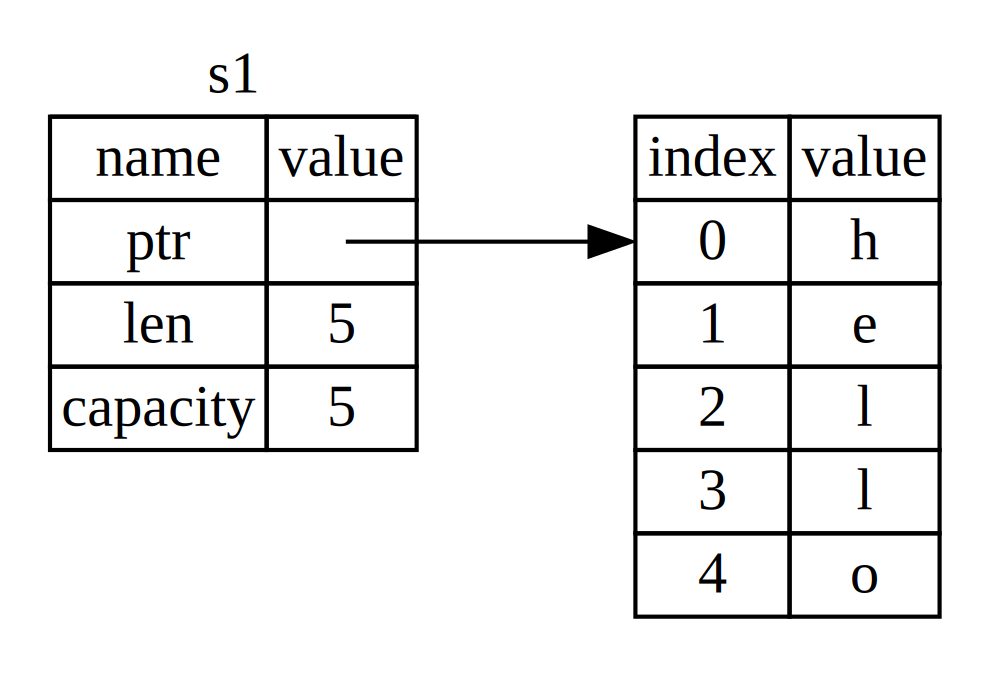

Что же такое владение?
Владение является весьма важной концепцией Rust. Неудивительно, что она весьма сильно повлияла на язык программирования в целом.
Существуем множество решений по управлению памятью во время работы программ. Это системы сборки мусора (куча), ручное управление выделенными ресурсами. Rust предлагает своё решение: управление ресурсами осуществляется по средством набора правил владения, которые компилятор проверяет во время создания программы (компиляции). Благодаря этому отсутствует необходимость управления памятью во время работы программы. Звучит весьма заманчиво, неправда ли?! Об этом так давно мечтали в равной степени, как программисты Си, так и Java.
Так как эта концепция ещё нова для многих программистов, её осознание и эффективное использование потребует определённых навыков. Наградой будет владением инструментом для создания безопасных и эффективных программы. Думаю, что данная цель того стоит.
Понимание концепции владениия даст вам основу для понимания всех остальных особенностей Rust. В этой главе вы будите изучать владение на примере работы с строковым типом данных.
Стек и куча
Во многих языках программирования не принято уделять много внимания организации работы с памятью. Для системного языка программирование эта тема весьма важна. Место хранения переменной (это стек или куча) очень важно. Это весьма сильно влияет на языковые конструкции и рекомендуемых шаблоны.
Хотя и стек и куча - это всё части доступной для программ области памяти, но их структура и способы взаимодействия с ними различна. Стек сохраняет значения в порядке получения и удаляет их в противоположном порядке (LIFO - last in, first out). Стек подобен стопке тарелок. Вы накладываете тарелки сверху и когда нужно берёте их сверху.
Работа со стеком даёт большой выигрыш по времени, т.к. нет необходимости в системе поиска нужных данных, а также все сохраняемые там данные имеют известный размер.
Для тех данных, размер которых не известен во время компиляции используется другое место хранения - куча. В куче нет чёткой организации данных. Когда вы сохраняете данные в куче, вы запрашиваете произвольный размер памяти. Операционная система ищет необходимый блок и предоставляет ссылку на его начало. Этот процесс называется выделение памяти в куче. Или просто выделение памяти.
Система выделения памяти работает медленнее стека, т.к. мы должны затратить время на поиск места в памяти.
Когда код вызывает функцию, все локальные переменные сохраняются в стеке, когда функция прекращает работу все её переменные удаляются из стека.
Отслеживание какая часть кода использует данные из кучи, минимизирует дублирование и удаляет ненужное. Это приводит к эффективному расходованию системных ресурсов. Когда вы разберётесь с концепцией владения вы не будете думать о стеке и куче, но всё же понимание как эти системы распределения памяти работают поможет более глубоком пониманию теоретического материала.
Правила владения
Прежде всего, давайте познакомимся с самими правилами. Пожалуйста, помните о них во время практической работы с примерами программ:
- Каждое значение имеет переменную, которая ей владеет, т.е. имеет владельца.
- Одновременно, у значения может быть только один владелец.
- Когда переменная выходит за область видимости, значение удаляется.
Область видимости переменной
Для объяснения области видимости мы абстрагируемся о какого-либо контейнера.
Будем считать, что код находится в каком-то контейнере, например, внутри определения
функции main.
Рассмотрим область видимости переменной. Область видимости - это область, в которой с переменной можно осуществлять какие-либо действия. Сначала объявим переменную:
let s = "hello";
Переменная s ссылается на строковый литерал. Значение данной переменной вписано
в код программы. Переменная считается действительной с момента её объявления до
конца текущей области видимости.
Два важных замечания:
- Когда переменная
sпоявляется в области видимости она считается действительной. - Она остаётся действительно до момента выхода за границы этой области.
Отталкиваясь от понимания этих замечаний мы переходим к объяснению более сложной концепции.
Тип данных String
Для объяснения правил владения, рассмотрим более сложный тип данных. До сих пор мы рассматривали типы данных, которые хранились в стеке. Теперь рассмотрим данные, которые хранятся в куче и рассмотрим, как Rust узнаёт, когда можно удалить данные.
Мы будем использовать тип данных String и рассмотрим ту часть описания данного
типа, которая связана с владением. Владение работает таким же образом и других
типах данных. Более подробно мы познакомимся с типом данных String в главе 8.
Мы уже видели работу со строковыми литералами в предыдущих главах, где значение
строк было вписано в код программы. Строковые литералы удобны для использования,
но не могут решить всех вопросов при работе с этим типом данных. Важной особенностью
строковых литералов является их неизменяемость. Для работы с текстовыми данными,
когда их значение и размер заранее не известен (например, при вводе данных с клавиатуры),
используется тип данных String. Данные этого типа хранятся в куче. Размер
таких данных неизвестен в момент компиляции. Вы можете создать переменную данного
типа с помощью статической функции from:
let s = String::from("hello");
Двойное двоеточие (::) - это оператор, которые определяет пространство имён типа.
В данному случает пространство имён типа String. Более подробно мы обсудим синтаксис
методов в главе 5. Пространство имён обсудим в главе 7.
Такие строки могут быть изменены:
fn main() { let mut s = String::from("hello"); s.push_str(", world!"); // push_str() appends a literal to a String println!("{}", s); // This will print `hello, world!` }
В чём же отличия типов данных изменяемых строковых String и неизменяемых литеральных?
Отличия в способе работы с памятью.
Память и способы ещё выделения
Тот факт, что значение литеральных типов известно в момент компиляции делает работу с ними таким эффективным. К сожалению, мы не можем заранее выделить часть памяти для хранения данных неизвестного типа и размера.
Для хранения таких данных (таких как данные типа String) наиболее удобно использовать
кучу. Это значит, что:
- Размер необходимой памяти запрашивается программой в момент её выполнения.
- Необходим механизм возвращения неиспользуемой памяти обратно операционной системе.
Первый пункт этого списка решается с помощью метода типа String::from. Это довольно-таки
универсальное решение.
Но второй пункт довольно-таки специфичен для каждой системы (языка программирования, технологии). Там где используется сборщики мусора. Там где нет сборщиков мусора программист сам должен отслеживать использование ресурсов и явным образом их освобождать. Исторически, корректное освобождение ресурсов - источник ошибок и одна из проблем в программировании. Если данные не удаляются своевременно, это приводит к бесполезному расходованию ресурсов. Если данные удаляются, а часть переменных программы ссылается на них - это приводит к сбоям. Повторное возвращение данных операционной системе также приводит к ошибкам. Мы можем один раз получить и один раз возвратить ресурсы.
Rust предлагает решение этой проблемы - ресурсы памяти возвращаются автоматически, когда переменная вышла за область видимости. Пример:
# #![allow(unused_variables)] #fn main() { { let s = String::from("hello"); // s is valid from this point forward // do stuff with s } // this scope is now over, and s is no // longer valid #}
Это довольно-таки естественные способ освобождение неиспользованной памяти. Когда
переменная выходит за рамки области видимости, Rust вызывает специальную функцию
для освобождения памяти. Эта функция называется drop. Можно сказать, что это последний
оператор в любой области видимости.
Обратите внимание: В C++, такой шаблон освобождения ресурсов называется Получение ресурса есть инициализация (Resource Acquisition Is Initialization (RAII)). Функция
dropбудет вам понятная, если у Вас уже есть опыт использования данного шаблона при программировании на C++.
Это шаблон сильно влияет на стиль, способ создания программ на Rust. Поведение программы может быть непредсказуемым, когда необходимо нескольким переменным использовать данные из кучи. Рассмотрим эту ситуацию подробнее:
Способы взаимодействия переменных и данных: перемещение
Несколько переменных может взаимодействовать с одними и теме же данными различными способами. Listing 4-2:
# #![allow(unused_variables)] #fn main() { let x = 5; let y = x; #}
Listing 4-2: Присваивание целочисленного значения переменной
xпеременной y
Вы, конечно, можете догадаться, что же тут происходит. Переменной x присваивается
значение 5. Потом создаётся копия этого значения, которая присваивается переменной
y. После выполнения этих строчек кода обе переменные будут иметь значение 5.
Эти переменные имеют простой тип данных и известные в момент компиляции значения.
Вся данные хранятся в стеке.
Теперь рассмотрим этот же пример с другим типом данныx (String):
# #![allow(unused_variables)] #fn main() { let s1 = String::from("hello"); let s2 = s1; #}
Хотя код внешне выглядит таким же, алгоритм работы совсем иной.
Для более подробного объяснения давайте рассмотрим структуру String (рисунок 4-3).
String состоит из трёх частей: ссылки а память, которая содержит данные, длину
и ёмкость. Эта группа данных сохраняется в стеке. Справа память кучи, которая
содержит данные.

Figure 4-3: Представление переменной s1 в памяти, имеющей
тип данных String, содержащей значение "hello"
Длина (в байтах) содержит величину данных, которое в данных момент используется. Ёмкость - это общее количество памяти (в байтах), которое переменная получила от операционной системы. Разница между длинной данных и ёмкостью, конечно имеет значение, но для объяснение взаимодействия переменной и памяти эта информация никак не повлияет. Пока проигнорируем эту разницу.
При присваивании переменной s1 переменной s2 данные типа копируются в стеке,
т.е. копируются данные о ссылке, длине и ёмкости. Представления данных в памяти
выглядит следующим образом (Рисунок 4-4).

Рисунок 4-4: Представление в памяти переменной s2
которая содержит копию ссылки, длинны и ёмкости переменной s1
Это представление отличается от того, если бы копировалось всё содержимое кучи.
Если бы Rust позволял это делать, операция присваивания s2 = s1 могла быть очень
затратной (по скорости её выполнения), если бы ёмкость копируемых данных и их сложность
была высокой.

Рисунок 4-5: Другая возможность при копировании s2 = s1 -
копирование содержимого кучи
Ранее, мы говорили, что когда переменная выходит за границы области видимости, Rust
автоматически вызывает метод drop и очищает память кучи для этой переменной. Рисунок
4-4 показывает, что имеется две ссылки на одни данные. Это является проблемой и
источником потенциальной ошибки, т.к. переменные s2 и s1 обе вышли за границы
области видимости и ссылаются на одни и те же данные. Это ошибка называется
двойная очистка. Такая двойная очистка может быть причиной повреждения данных
в памяти, что в свою очередь может привести к проблемам безопасности.
Для обеспечения безопасности памяти, существует решение. Вместо копирования выделенной
памяти, Rust считает переменную s1 недействительной. Кроме того т.к. переменная не
является действительной, то она не должна ничего освобождать. Пожалуйста, проверьте,
что произойдёт, когда вы попытаетесь использовать переменную s1 после создания
s2:
fn main() {
let s1 = String::from("hello");
let s2 = s1;
println!("{}, world!", s1);
println!("{}, world!", s2);
}
В терминальной строке вы увидите подобное сообщение, информирующее о том, что переменную
s1 уже нельзя использовать:
error[E0382]: use of moved value: `s1`
--> src/main.rs:4:27
|
3 | let s2 = s1;
| -- value moved here
4 | println!("{}, world!", s1);
| ^^ value used here after move
|
= note: move occurs because `s1` has type `std::string::String`,
which does not implement the `Copy` trait
Вы, наверное, уже слышали о разных вариациях копирования. Концепция копирования в Rust
может показать похожей на одну из них. Но у Rust есть существенное отличие - копируемая
переменная становится недействительной после операции копирования в другую переменную.
Эта операция называется перемещением. Так что можно сказать, что переменная s1
была перемещена в переменную s2. То, что действительно произошло показано на рисунке
4-6.

Figure 4-6: Состояние памяти после перемещения переменной s1
Это решает проблему множественного доступа к памяти в куче. Такой проблемы
просто нет. Только одна переменная действительна имеет права на данные - это переменная
s2.
Также обратите внимание, что Rust никогда не делает полного копирования данных. Поэтому любое автоматическое копирование может быть недорогим с точки зрения производительности.
Способы взаимодействия переменныx и данных: клонироване
Если вы действительно хотите глубокого копирования данных в куче типа данных String,
вы можете использовать метод clone. Мы подробнее расскажем о синтаксисе этого
метода в главе 5.
Пример:
# #![allow(unused_variables)] #fn main() { let s1 = String::from("hello"); let s2 = s1.clone(); println!("s1 = {}, s2 = {}", s1, s2); #}
Этот метод копирования замечательно работает и это способ, который вы можете использовать, чтобы добиться поведения описанного на рисунке 4-5 (где данные кучи были скопированы).
Когда в исходном коде программы вы встречаете использование метода clone знайте,
что использование этого метода может быть затратным по производительности.
Стековые данные: Копирование
Это ещё одна особенность о которой мы ещё не говорили. Этот код использует целые числа, часть которого была показа ранее в листинге 4-2. Этот код работает и не имеет ошибок:
# #![allow(unused_variables)] #fn main() { let x = 5; let y = x; println!("x = {}, y = {}", x, y); #}
Но этот код кажется противоречит тому, что мы только что изучили: мы не должны
вызывать clone, но x остаётся действительной переменнной и не перемещается в y
В Rust есть специальная аннотация Copy типаж, благодаря которой любой тип может
быть сохранён в стеке. Если тип имеет типаж Copy, переменные которые владели данными
до текущей переменной остаются доступными. Rust имеет следующие ограничения: тип не может
одновременно иметь типаж Copy и Drop. Любая группа скалярных значений может быть
Copy.
Список типов, которые имею типаж Copy:
- Все целочисленные типы, такие как
u32. - Логический тип данных
bool, значения которыхtrueиfalse. - Все числа с плавающей запятой такие как
f64. - Кортежи, но только если они содержат типы, которые также
Copy.(i32, i32)Copy, но(i32, String)нет.
Владение и функции
Симантически передача значений в функцию схожа с присвоением значения переменной. Переменная, которая передаётся в функцию будет перемещаться или копироваться. Пример кода 4-7 демонстрирует как переменные входят и выходят из области видимости:
Filename: src/main.rs
fn main() { let s = String::from("hello"); // s comes into scope. takes_ownership(s); // s's value moves into the function... //println!("{}", s); // ... and so is no longer valid here. let x = 5; // x comes into scope. makes_copy(x); // x would move into the function, println!("{}", x); // but i32 is Copy, so it’s okay to still // use x afterward. } // Here, x goes out of scope, then s. But since s's value was moved, nothing // special happens. fn takes_ownership(some_string: String) { // some_string comes into scope. println!("{}", some_string); } // Here, some_string goes out of scope and `drop` is called. The backing // memory is freed. fn makes_copy(some_integer: i32) { // some_integer comes into scope. println!("{}", some_integer); } // Here, some_integer goes out of scope. Nothing special happens.
Listing 4-7: Демонстрация изменения владения посредством передачи функции переменной. Демонстрация выхода переменной за пределы области видимости и освобождения ресурсов
Если вы попытаетесь использовать переменную после вызова метода takes_ownership,
компилятор Rust сообщит вам об ошибке. При повторном использовании переменной
x всё будет в порядке.
Возвращения данных из области видимости
Возвращение значений также может переместить владение. Пример 4-7:
Filename: src/main.rs
fn main() { let s1: String = gives_ownership(); println!("{}",s1); // takes_and_gives_back, which also // value into s1. let s2 = String::from("hello"); // s2 comes into scope. let s3 = takes_and_gives_back(s2); // s2 is moved into //println!("{}",s2); // takes_and_gives_back, which also println!("{}",s3); // moves its return value into s3. } // Here, s3 goes out of scope and is dropped. s2 goes out of scope but was // moved, so nothing happens. s1 goes out of scope and is dropped. fn gives_ownership() -> String { // gives_ownership will move its // return value into the function // that calls it. let some_string = String::from("hello"); // some_string comes into scope. println!("{}",some_string); some_string // some_string is returned and // moves out to the calling // function. } // takes_and_gives_back will take a String and return one. fn takes_and_gives_back(a_string: String) -> String { // a_string comes into // scope. a_string // a_string is returned and moves out to the calling function. }
Изменение владения ведётся по описанным ранее законам. Оно перемещается при изменении владельца данных.
На практике очень неудобно всегда отслеживать владение данными.
При передаче данных в функцию и из функции, для упрощения работы, удобно использовать кортежи:
Filename: src/main.rs
fn main() { let s1 = String::from("hello"); let (s2, len) = calculate_length(s1); println!("The length of '{}' is {}.", s2, len); } fn calculate_length(s: String) -> (String, usize) { let length = s.len(); // len() returns the length of a String. (s, length) }
Было бы конечно сложно писать программы на Rust если бы это были бы все опции доступные программисту при работе с владением памятью. К счастью, существуют ссылки, которые упрощают эту работу.